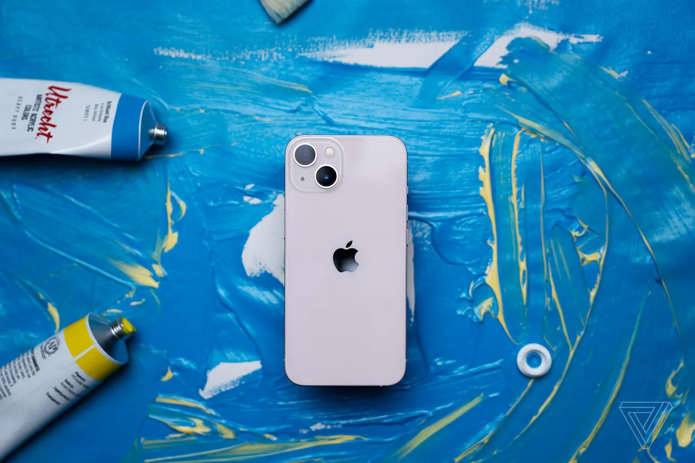
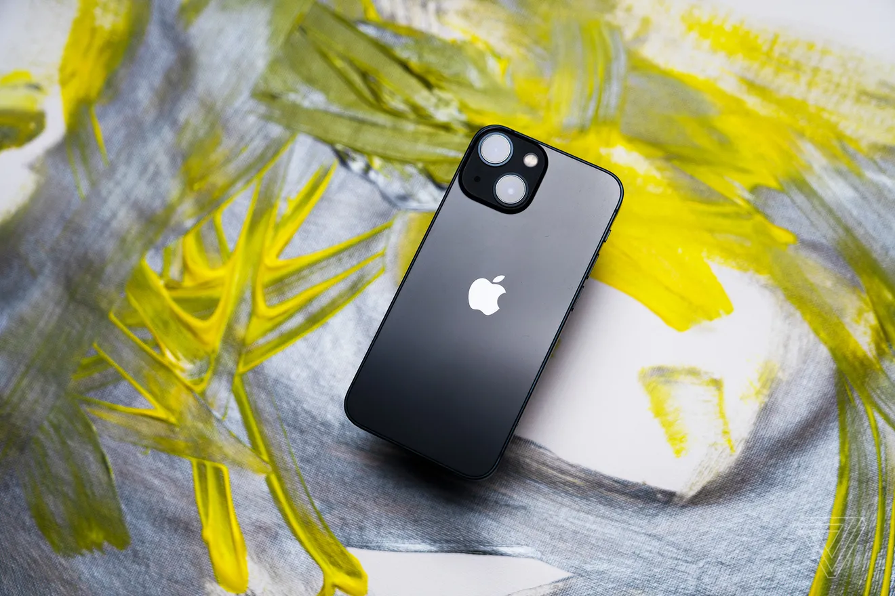
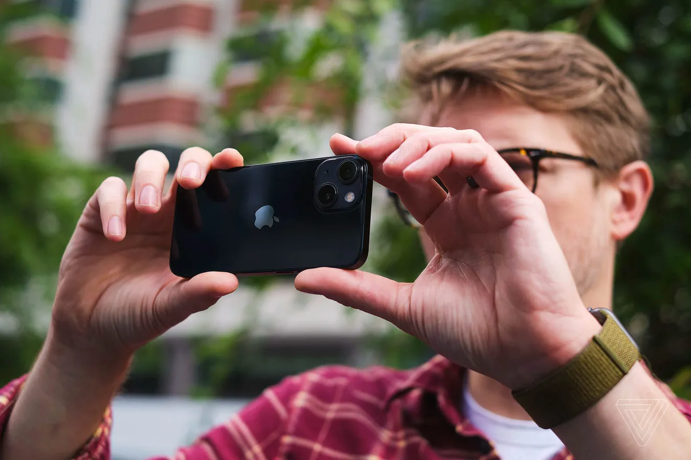
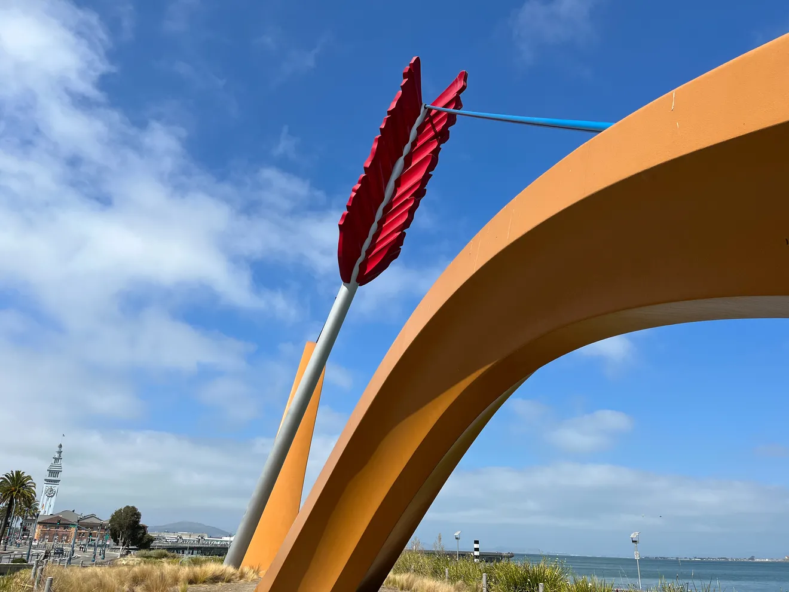

IPHONE 13 REVIEW: YEP, BIGGER BATTERIES ARE BETTER
So are bigger cameras
What, really, do you want out of a new phone?
Assuming you’re starting with a good foundation, I think the list of what really makes a big difference in
phone upgrades is actually short. The first thing on the list is improved battery life. The second is an
improved camera.
Those are the two things that make a fundamental difference in your day-to-day experience of a smartphone
(assuming, again, that the basics don’t stink). Those are also exactly the things Apple tried to make better
in the iPhone 13 and 13 Mini.
Those two improvements come on top of the major changes the company introduced last year with the iPhone 12.
If you already have an iPhone 12, this year’s update looks iterative because it is. If you have an older
iPhone, the full list of what’s better on the iPhone 13 is almost too long to enumerate.
The iPhone 12 brought new technologies and a fancy new design (and a new, Mini-sized version). The iPhone
13’s battery and camera updates aren’t so flashy, but they’re more important.

IPHONE 13 AND 13 MINI DESIGN AND SPECS
Unless you look very closely, it’s difficult to tell the difference between the iPhone 13 devices and their
predecessors. The iPhone 12 and 12 Mini introduced a striking and new flat-edged design that I still believe is
a massive improvement on what came before. And of course, the iPhone 12 Mini was the first phone in a long time
to bring a truly great experience to a smartphone with a smaller form factor.
They also switched over to OLED screens, which offer a superior experience to the LCDs that came before in
several ways: contrast ratio, brightness, and power efficiency. They added 5G. They added the MagSafe charging
system.
It’s worth revisiting all those big changes because people are hanging on to their smartphones for a longer time
now — especially iPhones. I think it’s fair to give the iPhone 13 and 13 Mini credit for the design they’re
based on since so many of the people that are likely to buy them will be new to what the iPhone 12 offered.
There are some changes to that design, however. The newer iPhones are just a tiny bit thicker overall, with
substantially bigger camera bumps. That means that cases designed for the iPhone 12 and 12 Mini are unlikely to
fit the newer phones. The camera bump is not only thicker, but the lenses have been rearranged to accommodate
the giant new sensor that’s in the main wide-angle camera.
The last change is that the notch housing FaceID and the selfie camera has been shrunk down by 20 percent — but
don’t get too excited by that. It’s only been reduced on the horizontal axis, so the extra screen you get
doesn’t amount to much (and Apple isn’t using it to show more info, like battery percentage).
There is a new processor inside the iPhone 13: the A15 Bionic. As usual with iPhones, it’s difficult to discern
significant speed improvements, but that is only because there’s so much headroom that iPhones tend to feel fast
for longer. The Pro models get one more GPU core than the regular models, but I haven’t noticed that make a
difference at all.
One difference that does matter this year: the base storage on the least expensive iPhone 13 and 13 Mini has
been increased to 128GB. I’m frankly impressed that Apple actually managed to proactively increase the base
storage on its own — historically, it’s always done it far too late.
Finally, my favorite design improvement over the iPhone 12 is that there’s a new pink color option. Of all the
colors offered on the iPhone 13 and 13 Pro lines, it is the best one.

IPHONE 13 BATTERY
Battery life on last year’s iPhone 12 wasn’t quite what I had hoped for. Battery life on last year’s
iPhone 12 Mini was sadly exactly what I was expecting: not very good. So for this year’s iPhone 13, Apple did
the obvious thing: it made the batteries bigger.
Those larger batteries (9 percent on the iPhone 13 Mini and 15.1 percent on the iPhone 13) are the main driver
behind Apple’s battery claims this year. It says that the regular iPhone 13 should last for a whopping
two-and-a-half hours of usage longer than the iPhone 12, while the Mini will last an extra one-and-a-half hour.
Of course, if you don’t have an iPhone 12, then the 13 lasting more than two hours longer is kind of
meaningless. My takeaway for the regular iPhone 13 doesn’t require relative comparisons, though: battery life is
excellent.
On one day of my testing, the regular iPhone 13 made it from 7AM to midnight before it tuckered out. That was
with some camera testing, watching some video, the usual doomscrolling, emails, work, and some games. It was an
intense set of work for the five hours of screentime that day, so that’s impressive. On another day with lighter
usage, I didn’t see the battery warning until the following morning. But the iPhone 13’s battery isn’t magic.
When we had a day of a lot more 4K video testing, I was looking for a charger by 7 or 8.
As for the iPhone 13 Mini, its battery life is much improved over last year’s 12 Mini, but not quite enough for
me to throw caution to the wind and recommend it to anybody who wants a smaller phone.
With last year’s 12 Mini, I had to significantly change my phone usage to get it to last through an entire day.
This year, I only had to modestly change my behavior. I think that if you’re not glued to your screen for many
hours a day, the 13 Mini crosses a line of battery usability the 12 Mini didn’t quite manage to even approach.
The iPhone 12 and 13 Minis are meant to be minimalistic, both in size and also in how much you use them. If you
are constantly using your phone all day, the smaller battery in the Mini isn’t likely to be enough.
My takeaway on the Mini is to not assume the improvements are enough to overcome the fundamental physics of
smaller batteries. My takeaway on the regular iPhone 13 is also based on fundamental physics: a big battery
means good battery life.

IPHONE 13 CAMERAS
Both the iPhone 13 and the 13 Mini have the same camera system: a regular wide-angle camera and an ultrawide.
Both have been upgraded, but the major improvement comes to the wide angle.
Just like the battery, the improvement to the wide-angle camera sensor is simple: make it bigger. A bigger
camera sensor is able to take in more light more quickly and produce better results. Apple happened to have just
such a sensor lying around: the one from last year’s iPhone 12 Pro Max.
That’s notable because the 12 Pro Max stood apart from all the other iPhones last year by having a larger
sensor, and now that sensor is the new default this year. And from the moment the 12 Pro Max was released up
until now, it has been the best smartphone camera on the market for both photos and video.

I am happy to report that the iPhone 13 and 13 Mini match or improve on those results. Details are sharp and
accurate, colors are rich without being oversaturated, focusing is fast and reliable, portrait mode is good
enough to use day to day, and low light and night sight are both exceptional.
Video quality is great. The main camera has sensor stabilization, which helps when you’re walking around. It can
do all the modes that matter in terms of 4K and slow mo and handles them all super well.
Really, the only way to be unhappy with this camera is to compare it head to head with an iPhone 13 Pro — and
even then, I think you’d probably need to do it on a big screen with images taken in low light.
The ultrawide sensor was also updated for better low-light performance, but it’s fairly minor. What I mostly see
is improved white balance and color when it’s in night mode. That’s something I’ve noticed across the board,
actually. Especially in low light, colors are a bit more true to life than last year.
My main wish is that the selfie camera sensor had been updated. It has some software improvements just like the
other cameras, and it’s inside a smaller notch now, but the selfie camera is too important for Apple to just
leave the same this many years in a row.
Apple has also introduced two new camera modes with the iPhone 13: Photographic Profiles and Cinematic Mode. I
have gone in depth on both of those features in the iPhone 13 Pro review, so you can read the full details on
how they work there. But I’ll briefly describe each here, too.
Photographic Profiles are a new option in the camera that change the default look of the picture you’re taking.
You can customize the tone and contrast of how all the pictures you take look instead of doing it in edit after
the fact.